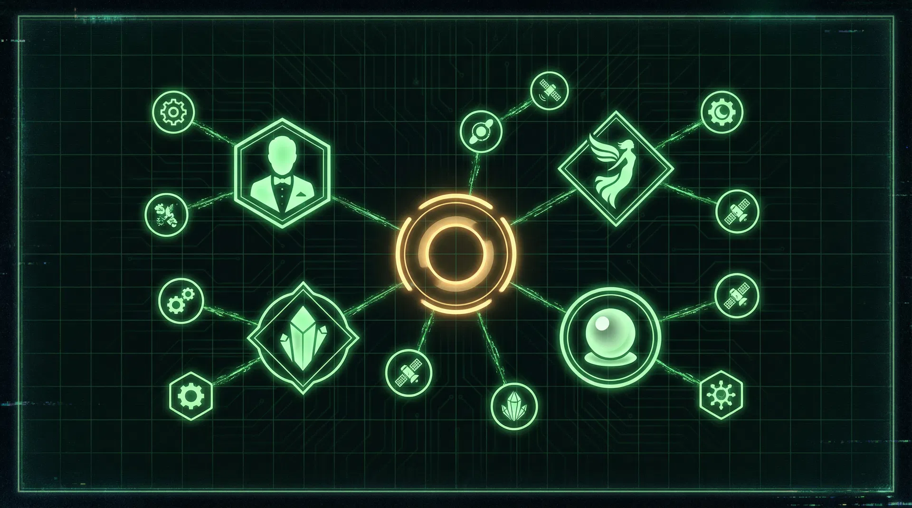

The Agent Fleet
The execution half of the HB1000 marriage — the Golden Age routing library, Mr & Mrs Fix-It, the Intent Harvesting Engine, and Babel Bridge — bolted onto Dingo squares under the 80/20 covenant.
The execution layer of the HB1000 partnership: the Golden Age routing library, the Mr & Mrs Fix-It service loop, the Intent Harvesting Engine, and Babel Bridge — attached to Dingo Card squares and operated under the 80/20 covenant, with human approval required at every sensitive gate.
“The agents bring the intelligence. The HB1000 brings the brilliance.”
“Let the agents swing the hammers. The HB1000 holds the blueprint.”
01 · The Golden Age Fleet — 10 trust archetypes (the routing library)
“Every trust mechanism can become a manipulation mechanism when scaled without conscience.”
Counter-principle: use AI to expand care, not to automate predation.
Click any card to flip it to its shadow side — the conscience layer. The full per-card playbook, golden kernel, consumer protection and existential risk live on the strategy-card art itself.
Click a rule to highlight which archetypes the signal routes to.
02 · Mr & Mrs Fix-It — the execution engine (four primitives, end to end)
“Every HB1000 gets a tireless AI Fix-It Crew that works inside their authority lane, does the heavy lifting, checks back when human brilliance is needed, and stays with the problem until it is fixed.”
“Brilliance can suggest anywhere. Authority can dispatch only in-lane.”
Enforced in code at creation, dispatch, and signoff — never just in a prompt. “If the lane check is client-side, ‘authority dispatches only in-lane’ is a sticker, not a rule. So it isn’t.” Out-of-lane ideas become Fix-It Suggestions routed to the lane-owning HB1000. In this page the lane rule is enforced in shared JS and visibly labelled as a simulation.
“Agents work 24/7 inside the fence. The HB1000 approves sensitive gates.”
Agents MAY research, draft, compare, clean, score, prepare, analyze, monitor, report. Agents MAY NOT without HB1000 approval: contact customers, send external messages, spend money, make legal/financial claims, change production systems, file legal documents, sign contracts, publish allegations, use sensitive personal data beyond ticket scope, or act outside the authority lane.
“The agent never sleeps, but it still stays inside the fence.” Full MAY/MAY-NOT table: The Doctrine.
v1 reality check: only the Babel Translator is live; the rest are registry placeholders — “specced, deferred to HB1000.”
03 · Cash-Out — the flagship assignment (BUILT 2026-06-07)
“Manager pushes ‘Cash Out’ → agent does ~80% → manager approves the 20% → clean trail handed to Samantha’s Stage-2 team.”
“Manager 100% by hand → the agent does ~80%, finds the air, the manager approves and goes home.”
Simulated figures per CashOut-Assignment-Agent-Spec v0.1 — the built engine at
Mr and Mrs Fixit/mvp-v1/cashout/ runs this exact flow against a mock Z-report with passing tests.
Run the cash-out to reconcile
(counted cash − starting float) vs the Z-report cash-sales total. The agent auto-matches the bulk and
produces a clean exceptions list — not a black-box answer. “Here’s what balances; here are the items that
don’t, and where the air likely is.”
The approval gate appears after reconciliation. Approve / Modify / Decline are the only verbs — nothing auto-applies.
Each receipt’s content blob is hashed with SHA256 (sorted-keys canonical, hash stored inside the receipt) — tamper-evident. “Git is your audit log.” Ledger entries here persist to your browser’s localStorage; this demo is a simulation of the built engine.
“The BUILD-NOW block is hours of work, not weeks. The schedule is the managers iterating with it nightly until it’s earned their trust.”
The cash-out is the prime adoption lane (protect the prime — Pawn Princess); next adoption = Stage-2 with Samantha. “Build is free; human adoption is the only scarce resource.”
04 · The Intent Harvesting pipeline — the SENSE layer that feeds the fleet
“We harvest intent, not attention.”
Old model: buy attention → interrupt → hope → retarget → pay forever. New model: detect public intent → route to a Golden Age trust mechanism → draft a helpful “digital knock” → a human makes the warm connection → learn.
Human-share percentages are computed live from the real Seba Hub Dingo card
(data/cards/seba-hub-occupancy.json, squares E1–E10) — computed, never asserted. The approval gate is
deliberately the human-heaviest square on the card.
red_individual_private can ONLY produce a public post, NEVER a message to a person — any phase, no override. No override field exists in the schema, by design. The pilot runs GREEN-ONLY. MVP hard rule: 0 live outbound sends — draft-only throughout.
“If there were no rules, what would we try?” — Curiosity first. Judgment second. Scale third. Draft-only, 0 live sends.
Every tactic gets a verdict: Keep / Modify / Restrict / Kill.
A lane goes live only after it is explicitly promoted past Tin Hat. Weak signals (confidence 50–69) sit in the Watch Queue.
05 · The Approval Console — the human decides every move
Loading real Seba signals from data/signals.json…
Generalized from the working Seba nightly console. Verdicts persist to your browser’s localStorage
(hb1000-approvals) — drafts are real seed data; nothing here can send.
06 · Babel Bridge — the communication organ of the fleet
Most of what goes wrong between humans is that “the message did not arrive intact.” Text is a thin pipe that strips tone, face, gesture, feeling. Babel Bridge is a prism: compose once, and the message refracts into every channel a human might need to actually receive it.
One message in → parallel renderings out (written text, voice, infograph, picture, comic frames, Emoji Mode glyph strings, haptic, photic — extensible). Inside this OS it shows up as the Babel Translator agent: Formal / Plain / Barstool / Timbit on every outbound draft.
The sender sees every rendering before sending and confirms “is that what I meant?” — the AI never guesses in private.
A message arrives as plain “white light” by default; one tap breaks the prism open. The choice of how to take in a message belongs to the person on the other end.
The Plain English baseline is the real approved-style draft from data/signals.json
(signal org-01, “Rescue · staycation”). The other three are Babel Translator renderings — simulated, draft-only, nothing sends.
The full multi-channel bridge is NOT rebuilt in this app — canonical build: Babel Bridge v5.1
(estate folder Babel Bridge-Better and Emoji mode/V Versions starting at 5.1/). It is LLM-agnostic open
infrastructure: “We will not capture value from the protocol.”
07 · Seba Hub — the live exemplar card
The whole fleet layer, running on one real Dingo Card: 12 occupancy lanes on top, the Intent Harvesting Engine on the bottom, PTK “no empty night, no empty seat” at the centre. Dingo Caller: Casey — one neck to choke; Casey approves every message.
Tone rule for everything customer-facing: value-first, dignified, no-shame, no-creepiness — “use AI to expand care, not to automate predation.” · “Every output is a baseline, never final.”